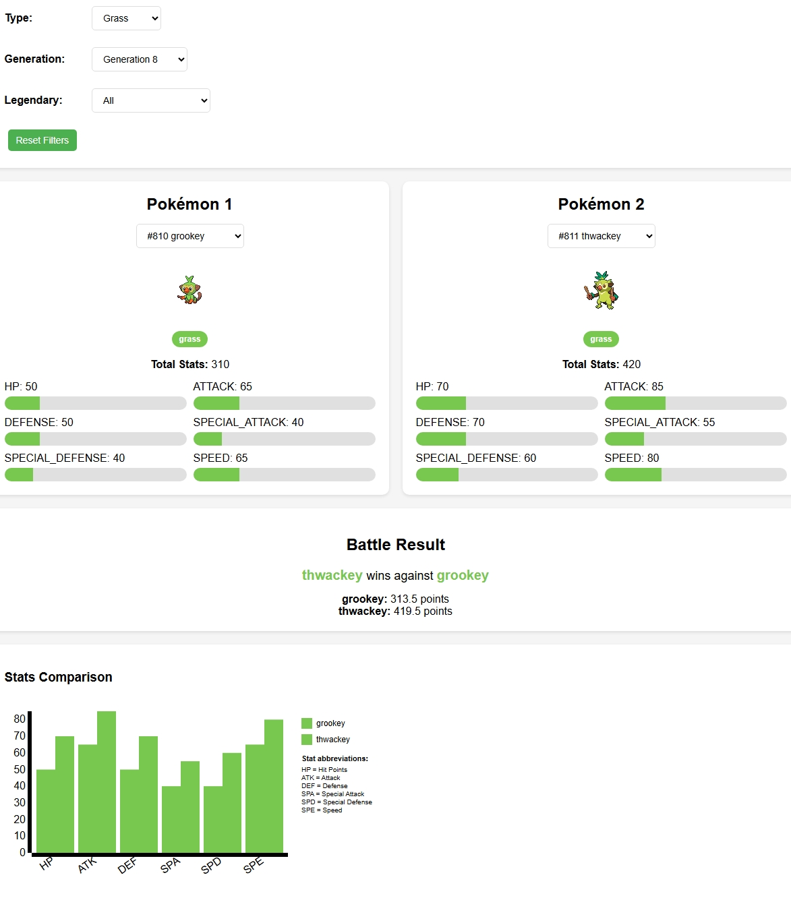

This interactive D3.js v3 visualization project allows users to compare any two Pokémon from all generations based on their stats and types. It provides a clear battle comparison with dynamic charts and filtering options. The design is inspired by questions about the Pokémon dataset, such as: "How do type matchups and stats influence battle outcomes?" and "Do Legendary Pokémon dominate across generations?"
I began by exploring the Pokémon dataset in JavaScript, loading the JSON data and prototyping a basic static display in a text editor. Initial ideas focused on a simple table view for stats, but after testing data loads and experimenting with D3 scales (inspired by the lectures, videos, pdfs, and book), I iterated to add interactive filters and a dynamic bar chart. This took about 3 weeks: Week 1 for core structure (filters and selections), Week 2 for D3 integration and battle logic and week 3 for adding sprites and additional refinements based on user testing (e.g., simplifying the type chart after trial runs). I discarded more complex ideas like force-directed graphs for type relationships to keep it focused on comparison tasks. I matched the colors for the stats based on the type. I started with a basic bar chart and evolved it for interactivity.
Overall, choices balance expressiveness and effectiveness, drawing from the D3 book's emphasis on iterative, user-centered design.
I explored the dataset by filtering and comparing to uncover patterns.
Question 1: How do type matchups affect battle outcomes?
In one example, I selected Pikachu against Squirtle. Even without a full type-effectiveness system, Pikachu’s Electric typing and offensive stats make it a strong attacker compared to Squirtle’s bulkier defensive profile. This screenshot shows how the tool displays their stats side-by-side and highlights which one is predicted to win.
Screenshot 1: Battle result where Pikachu’s Electric typing and stats help it defeat Squirtle.
Question 2: Do Legendary Pokémon always win?
I compared Mewtwo (Psychic, Legendary) vs. non-Legendary Charizard. In most comparisons, Legendaries like Mewtwo tend to dominate because of their higher base stats, especially in Special Attack. However, there are cases where fast non-Legendary Pokémon can tie or come close in certain stat combinations, showing that Legendaries are strong on average but not unbeatable in all situations.
Screenshot 2: Stats chart after using the Legendary filter; Mewtwo’s Special Attack clearly stands out compared to Charizard.
Question 3: How have stats evolved across generations?
Using the Generation filter together with the Type filter set to Grass, I explored how Grass-type Pokémon changed from early games to newer ones. For example, filtering to Generation 1 and looking at Pokémon like Venusaur (#3) and Victreebel (#71), I mostly see mid-range Speed and balanced offensive stats. When I switch the Generation filter to Generation 8 and look at Grass-types such as the Grookey line (#810–#812) or Eldegoss (#830), I notice more high-Speed or high-Attack Grass Pokémon, and some with higher overall stat totals. This pattern emerged by repeatedly switching the Generation filter between 1 and 8 and observing how the stat bars and battle outcomes changed.
Screenshot 3: Example of the interface with Grass-type and Generation 1 filter applied; I repeated this exploration with Generation 8 Grass-types to compare how their stats differ from the original Grass Pokémon.
Screenshot 4: Example of the interface with Grass-type and Generation 8 filter applied, used to contrast with the Generation 1 Grass Pokémon.
These insights were iterative. I refined filters after initial tests and used the comparisons to better understand how type, stats, and generation interact in predicting battle outcomes.
Watch this narrated demo showing the visualization in action, including filters, selections, and a key discovery using the Pokémon Battle Comparison Tool.
This unlisted YouTube video (direct link) demonstrates the main interactions of the tool.
pokemon_data.js)pokemon-battle-tool/
├── index.html # Main application interface and logic
├── pokemon_data.js # Pokémon dataset with all generations and stats
├── doc.html # This documentation file
├── Screenshot_2-12-2025_83911_.jpeg # Screenshot 1: Pikachu vs Squirtle
├── Screenshot_2-12-2025_111444_.jpeg # Screenshot 2: Mewtwo vs Charizard (Legendary)
├── Screenshot_2-12-2025_1423_.jpeg # Screenshot 3: Grass-type, Generation 1
└── Screenshot_2-12-2025_181729_.jpeg # Screenshot 4: Grass-type, Generation 8
index.html in a modern web browser (Chrome recommended).The pokemon_data.js file contains an array of Pokémon objects with the following structure:
[
{
id: Number,
name: String,
types: [String, ...],
generation: Number,
legendary: Boolean,
stats: {
hp: Number,
attack: Number,
defense: Number,
special_attack: Number,
special_defense: Number,
speed: Number
}
},
...
]pokemon_data.js is in the same folder and correctly linked in index.html.